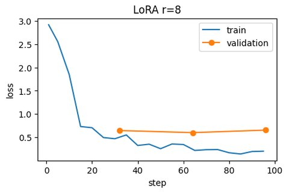
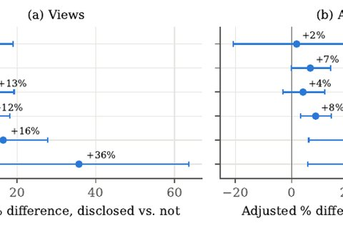
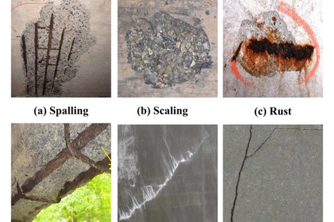
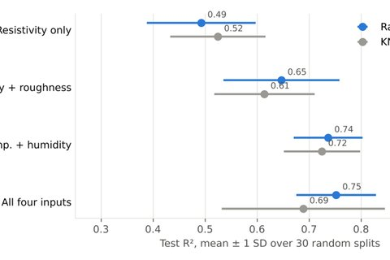

Projects
(code for all projects on GitHub)
tool-calling agent
with verified citations
Evidence-Grounded LLM Trading Agent
Course project, WPI · Fall 2026
Fine-tuned Qwen 2.5 (1.5B) with LoRA to build a tool-using agent that researches SEC filings, news and market indicators before each decision and must cite its evidence. Code verifies every citation and cancels decisions the model cannot support. A BM25 memory retrieves the agent’s own past reflections. Ran for a week of live paper trading.

Gemma-3-1B: Prompting, LoRA/QLoRA Fine-Tuning and BM25 Retrieval
CS 554 Natural Language Processing, WPI · Fall 2026
Fine-tuned Gemma-3-1B with LoRA and QLoRA on SQuAD v2 to answer with short spans from the passage and abstain when the answer is absent: LoRA raised exact match from 64 to 74 and correct abstention from 24% to 74%. A BM25 retriever over 12,241 SciQ paragraphs raised exact match from 0.7 to 80.7.
BanReady: Snow-Ban Parking Assistant
WPI i3 Lab Demo Day · Fall 2026 · Finalist
A working app prototype that shows Worcester drivers where they can legally park during winter snow bans, estimates the chance of finding a legal space on storm nights, and suggests free lots and garages within a short walk.

Salary Disclosure and Job-Posting Engagement
DS 502 Statistical Methods for ML, WPI · Fall 2026 · Team project
Analyzed 123,849 LinkedIn job postings with regression (company-clustered standard errors), Ridge and Lasso. Postings that disclose salary receive about 10% more views, and the effect grows with seniority, reaching 36% for executive roles.


Multimodal Corrosion Prediction in Reinforced Concrete
Undergraduate thesis, CUET · 2024–2025
Built a corrosion database from 250 field measurements (surface images, half-cell potential, resistivity, weather), extracted image roughness features with OpenCV, and trained regression models. Deployed as an interactive web app.
across 10 cities
ML-Based Dynamic Exposure Assessment for Urban Hazard Risk
Tomorrow’s Cities · 2026
Designing Random Forest and XGBoost models that predict spatial risk patterns from synthetic exposure data (buildings, population, land use), adding human mobility and time-dependent population to compare dynamic and static exposure, and testing generalization across 10 cities.
25–100% CAV
penetration
CAV Penetration on a 2-km Expressway (SUMO)
Independent · 2025
Quantified speed, travel time, delay, throughput, safety surrogates and emissions at 25/50/75/100% connected and automated vehicle penetration, with significance testing.
+ risk chatbot
Skills
- NLP & LLMs
- Text classification, LLM-based information extraction, NER, LoRA/QLoRA fine-tuning, retrieval-augmented generation (BM25), tool-calling agents, Hugging Face Transformers / PEFT
- Machine learning
- PyTorch, scikit-learn, XGBoost, TensorFlow/Keras, SHAP, reinforcement learning (MPLight, IDQN)
- Computer vision
- Ultralytics YOLO, OpenCV
- Transportation
- SUMO, VISSIM, SIDRA, ArcGIS Pro
- Programming
- Python, R, Jupyter, Git/GitHub, LaTeX
Awards
- Champion, ACI Intra-CUET Concrete Solutions Competition (2022); 11th internationally, ACI Concrete Solutions Competition (2022)
- Third Place, National Concrete Idea Competition (2023)
- Most Innovative Mix Design (finalist), 24h Concrete Cube Competition (2023)
- Fourth Place, ACI Intra-CUET Eco-Concrete Competition (2022)